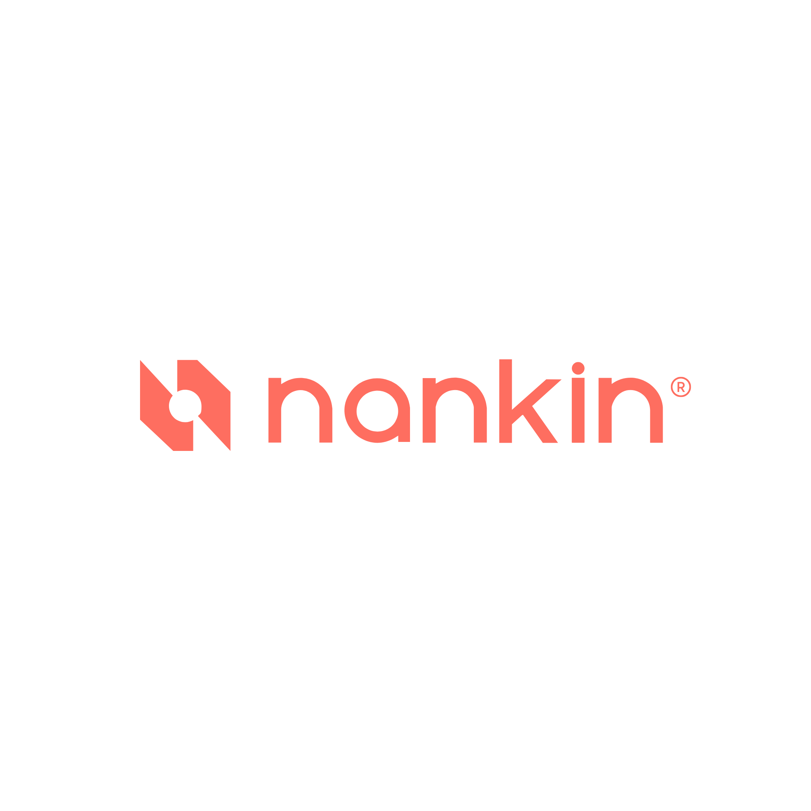
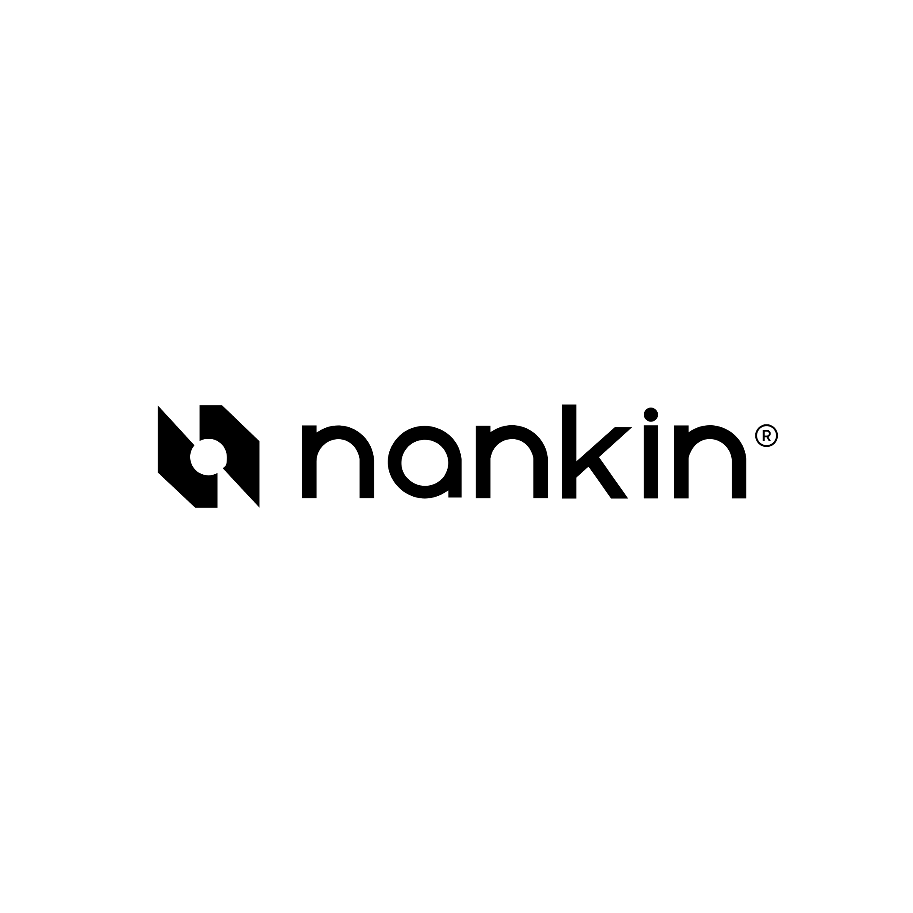

Versão principal
O logotipo da Nankin traduz os valores da arquitetura: precisão, modernidade e sofisticação. O símbolo geométrico, com linhas limpas e um ponto central, remete a estruturas construtivas e ao conceito de foco. A tipografia minimalista complementa o ícone, garantindo clareza e impacto.

Variações
O logo pode ser usado em três variações, conforme o contexto e o espaço disponível:
Versões horizontal e vertical
Use a versão horizontal por padrão. A vertical é reservada para aplicações onde o espaço pede composição mais quadrada — ícones de app, capas, social.
Margem de segurança
Conserve um espaço limpo ao redor do logo para preservar legibilidade. A margem mínima é igual à altura da letra "A" do nome Nankin.
Tamanho mínimo
Largura mínima da versão horizontal. Abaixo disso, prefira o isotipo.
Versões de aplicação
O logo deve sempre estar sobre a paleta Nankin. Em comunicação de terceiros, use cor sólida, foto ou vídeo que permita legibilidade.

Co-branding
Em parcerias, o logo Nankin sempre vem antes do logo do parceiro. A linha divisória tem altura igual a 2× a letra "A" e o espaçamento de cada lado é igual à largura da letra "A".
- Para novos produtos ou serviços em conjunto
- Para conteúdo com autoria compartilhada
- Para eventos com host em conjunto
- Para campanhas e ativações patrocinadas entre Nankin e parceiro
Usos incorretos
O logo nunca deve ser distorcido, inclinado ou ter proporções alteradas. Não use efeitos como sombras, brilhos ou gradientes. Não troque cores originais. Não insira em formas, molduras ou elementos que descaracterizem a identidade.